甲第灵光：技术架构、业务实现与项目复用分析
分析日期：2026-09-10。分析对象：当前工作区的 miniprogram/、service/、background/ 源码。
这是一套面向建筑与设计场景的 AI 内容生产及运营系统。用户通过小程序完成需求表达、图片或视频生成、模板消费、报告购买与联系设计服务；管理端负责配置、内容审核、用户运营、交易排查和客户跟进；Go 服务端承担身份、业务规则、任务编排、计费和交付。
当前更准确的架构定位是：三个独立工程、一个按模块划分但耦合较多的 Go 单体服务，配合 MySQL、Redis、COS 及多个外部平台。HTTP 接口、任务执行、支付补偿、视频监控和报告 Worker 都在同一个 Go 进程中启动。Python 是报告渲染子进程，并非独立的 Python API 服务。
本文依据注册路由、页面配置、关键函数和数据访问实现，不以文件名、注释或 README 单独判定功能完成度。未连接生产数据库，未验证线上开关、供应商连通性、实际部署拓扑或支付行为。文中版本是仓库声明，费用与规则是代码行为，均不代表外部平台当前规则。没有修改业务代码。
1. 项目范围与阅读地图
| 工程 | 已确认的技术组成 | 实际职责 |
|---|---|---|
小程序 miniprogram/ | 原生微信小程序、TypeScript、WXML、SCSS/WXSS、TDesign、CryptoJS、SM4 工具 | 页面交互、上传、签名请求、分块流式响应、轮询、缓存、微信支付和授权 |
管理端 background/ | React 18、TypeScript、React Router 7、Vite 7、Sass、Fetch | 配置和审核、列表详情、运营分析、客户线索、异常处理 |
服务端 service/ | Go 1.24.1、Gin 1.11、database/sql、MySQL 驱动、go-redis v9、gin sessions | 业务 API、数据库访问、会话、计费、异步任务和第三方适配 |
| 报告渲染 | Go exec.CommandContext 调用 Python + ReportLab | 把固定结构的内容快照排版为 A4 PDF |
| 媒体处理 | Go 图像处理、FFmpeg、腾讯 COS SDK | 图片原图/水印图/缩略图、视频水印/拼接、文件存储 |
静态扫描得到：57 个注册小程序页面（27 个主包页面、26 个分包内共 30 页）、25 个管理端路由（含登录）、267 条 GET/POST/PUT/PATCH/DELETE 路由注册语句、47 个不同的业务建表名称。后两项包含条件注册和兼容代码，不等于线上实际开放接口数或实际数据库表数。另有 36 个 Go 测试文件、19 个小程序测试文件；本次未运行这些业务测试。
完整页面、管理路由、建表声明和原始路由注册位置见配套 code-index.md 与 inventory.json。
建议阅读顺序：先看总体图 → AI 任务与资金链路 → 模板/会员/报告权限差异 → 管理端 → 复用建议与风险。
依据：service/go.mod:3；miniprogram/package.json:14；background/package.json:16；miniprogram/miniprogram/app.json:2；background/src/routes/index.tsx:62。
2. 总体技术架构

这张图表达代码调用关系，不推断服务实例数量。当前仓库未提供可确认的 Nginx、容器编排、Kubernetes 或 CI/CD 配置，不能把它们画成已经部署的组件。COS 对象存储也不自动等于已经部署 CDN。
服务端的目录分工如下：
| 目录 | 当前作用 | 架构判断 |
|---|---|---|
route/ | 路由注册、参数校验、业务编排，部分统计 SQL 也在这里 | HTTP 层与业务层尚未充分分离 |
processor/ | 微信、密码、手机号登录策略 | 局部采用策略模式，不是全业务统一 Service 层 |
model/ | 数据结构、原生 SQL、建表、迁移兼容与部分业务规则 | 没有使用 GORM；模型同时承担仓储和一部分领域逻辑 |
component/ | 数据库、Redis、COS、请求池、AI 适配、短信、核验、媒体处理 | 包含基础设施，也包含较重业务编排 |
function/ | Token、签名、密码、上传等工具 | 跨模块工具集合 |
report/ | Service、Worker、Store、Renderer、Storage、Catalog 接口 | 边界相对清楚，最值得参考的模块结构之一 |
reportwecom/ | 报告交付的企微票据、身份验证和欢迎消息 | 报告交付专用适配模块 |
sql/、cmd/ | 迁移、补历史数据、图片变体回填、账号合并等 | 证明系统已经处理存量数据演进问题，不能只按新建表考虑升级 |
启动顺序是：读取本地环境 → 初始化日志/配置/COS → MySQL/Redis → 多个表和兼容迁移 → 加载会话及余额缓存 → 初始化支付和认证策略 → 启动图片处理器和视频恢复 → 注册接口、报告 Worker、支付补偿 → Gin 监听。
依据：service/main.go:50；service/route/index.go:14；service/component/database.go:17；service/component/report_pdf.go:54。
3. 小程序前端：页面驱动的原生应用
3.1 页面组织与状态
底部主入口是首页、模板广场、设计师中心、个人中心。首页承担 AI 工具、设计场景和客服等能力的分发。生成、详情、订单、钱包、邀请、认证、报告等页面通过普通页面或分包承载。
页面基本采用 Page({ data, onLoad, onShow, ... }) 和 setData。全局 App 管理少量通用能力，例如内容拦截弹窗、启动邀请码和 Tab 图片预热；业务状态主要留在页面、本地 Storage、页面缓存及页面跳转参数中。仓库未采用 Taro/uni-app，也没有集中式 Redux/Pinia 类状态架构。
app.json 配置自定义 TabBar、分包预加载、lazyCodeLoading: requiredComponents 和 glass-easel。存在 Skyline 配置段，但仅凭这段配置不能断言所有页面都使用 Skyline 渲染。
3.2 网络层与长任务
普通页面直接调用 wx.request 的情况较多；工具、收藏、支付、报告等能力已有局部 API 封装，但还没有全项目统一的请求客户端。很多文件分别定义相同 API 域名，环境切换和全局错误策略容易分散。
AI 请求一般经过 generateRequestParams、paramsToHeaders；上传也使用同类鉴权参数。聊天通过 enableChunked: true 与 onChunkReceived 消费服务端 SSE 事件。图片生成提交后只拿任务号，进度页采用 setTimeout 分级延迟轮询；成功跳结果，失败显示原因。轮询生命周期在部分页面有清理实现，但还不是统一任务订阅服务。
3.3 已有性能设计
utils/perf.ts 用有过期时间的 Map 存页面数据，限制最多 80 个缓存项、160 个预取图片记录；通过 wx.getImageInfo 预热少量图片。它是有容量限制的插入顺序缓存，读取时没有重新调整顺序，不应称为完整 LRU。
模板广场按主/次/三级分类、关键词构造缓存键，使用请求序号防止过时返回覆盖当前列表，并预取详情和图片。模板详情还有用户范围缓存相关测试，说明“公共数据”和“个人解锁/会员状态”需要不同缓存范围。
值得复用的是：主包保留高频入口、低频流程分包；列表缓存与图片预取配合；使用请求序号处理快速筛选导致的返回乱序。迁移时建议统一请求、登录失效处理和轮询生命周期，再复制页面。
依据：miniprogram/miniprogram/app.ts:40；miniprogram/miniprogram/utils/perf.ts:6；miniprogram/miniprogram/pages/template/template.ts:639；miniprogram/miniprogram/pages/generateprogress/generateprogress.ts:7；miniprogram/miniprogram/pages/chat/chat.ts:405。
4. 身份、登录与权限：三种请求身份形态
4.1 登录流程
微信登录用 wx.login 的 code 换真实 openid/unionid，先按 openid 查用户，再按 unionid 识别并补绑定，必要时兼容历史设备会话，最后生成业务会话。手机号验证码登录通过 user_identities 找到用户；找不到时创建用户及资料并绑定手机号。密码登录使用注册好的策略；管理端使用 management 用户类型的密码策略。
users 存基本账号和微信身份，user_profiles 存展示资料及部分验证信息，user_identities 承载手机号等身份凭证，code_sessions 表和 Redis 承载业务会话。系统正在从历史身份存储走向统一凭证，但微信身份尚未完全收敛到单一身份表，不能把它描述成已经完成的统一身份中心。
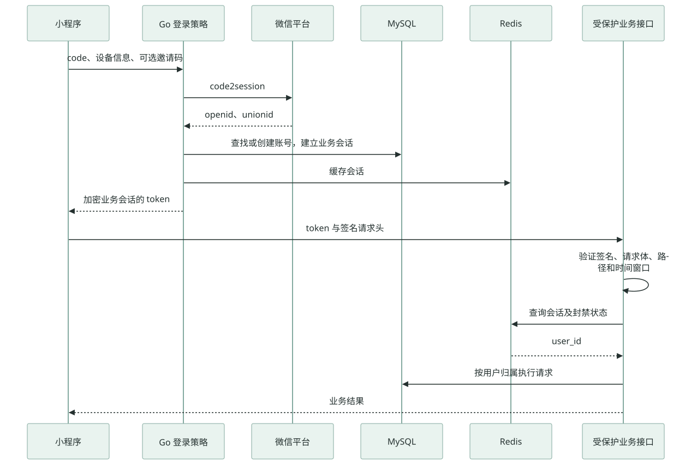

4.2 不要把所有 token 当成 JWT
| 请求类别 | 实际凭据 | 校验位置 |
|---|---|---|
| 小程序 AI 等完整鉴权接口 | 加密会话 token、token-signature、sin、md5-signature、pass、tm | TokenAuthRequired 校验 token、请求体/路径、设备参数、300 秒时间窗口与封禁状态 |
| 小程序部分用户数据/签到接口 | token | 局部 simpleTokenAuth 解密 token 并查询会话；没有完整请求签名链 |
| 管理端 | Redis Session + sessionid Cookie | AuthRequired 检查 Session 的 user_id |
管理端 localStorage 的 admin_token = session_active 只是前端登录标识。Fetch 虽然附加 Bearer，真正的后台身份依据仍是 Cookie，不是这个固定字符串，也不是 JWT。
4.3 可复用部分与边界缺口
可复用登录策略接口、账号与凭证分离、多设备归属识别、业务接口的资源归属检查。自定义 SM4/MD5 多段签名不适合直接作为新项目的安全基础：客户端含默认共享参数、部分接口使用简化鉴权，而且时间窗口不等于每笔业务的防重放/幂等。
当前重要缺口：管理端中间件只判断是否登录，没有判断 user_type == management；小程序登录也写入同一个 Session 体系。因此源码所显示的管理接口权限边界不足，应先补服务端管理员角色校验，再考虑细粒度 RBAC。前端 ProtectedRoute 不能弥补服务端缺失的权限判断。
依据：service/processor/auth_strategy.go:9；service/processor/wechat_auth.go:83；service/processor/phone_auth.go:49；service/route/middleware.go:16；service/route/middleware.go:63；service/route/miniprogram.go:101；background/src/api/auth.ts:23。
5. AI 图片与设计工具：共享执行引擎、多种业务入口
5.1 普通生成的完整调用链
入口包括 aigenerate、aitoolworkbench、模板做同款和多个专用设计页面。通用提交接口是 POST /api/v1/miniprogram/ai/draw，请求核心为 scene + payload。
- 后端根据 scene、tool_id/tool_code、模板 ID 重新读取工具与模板配置，补充内部提示词、预设风格和参考图。
- 根据
ai_pricing的场景单价与生成张数计算扣费；通用生成张数最多 3 张。 - Redis Lua 原子检查余额并扣减。
- 通用生成在一个 MySQL 事务中写入消费流水、消费订单和 pending 任务。若数据库操作失败，尝试退回 Redis 灵石。
- 返回任务编号；页面进入轮询。
AITaskProcessor每 2 秒从任务表领取最多 10 个 pending 任务。领取使用 MySQL 事务、SELECT ... FOR UPDATE和状态更新，提交前已将任务改为 processing。- 请求池由 CPU/可用内存估算 Worker 数，使用有界 channel 队列；调用对应供应商协议，必要时按候选模型/通道降级。
- 下载供应商结果，生成水印图、原图和缩略图等资产，上传 COS；记录真实模型、接口、外部任务号与尝试信息。
- 写 success/failed。部分出图可按缺失张数退灵石；全部失败尝试全额退回。
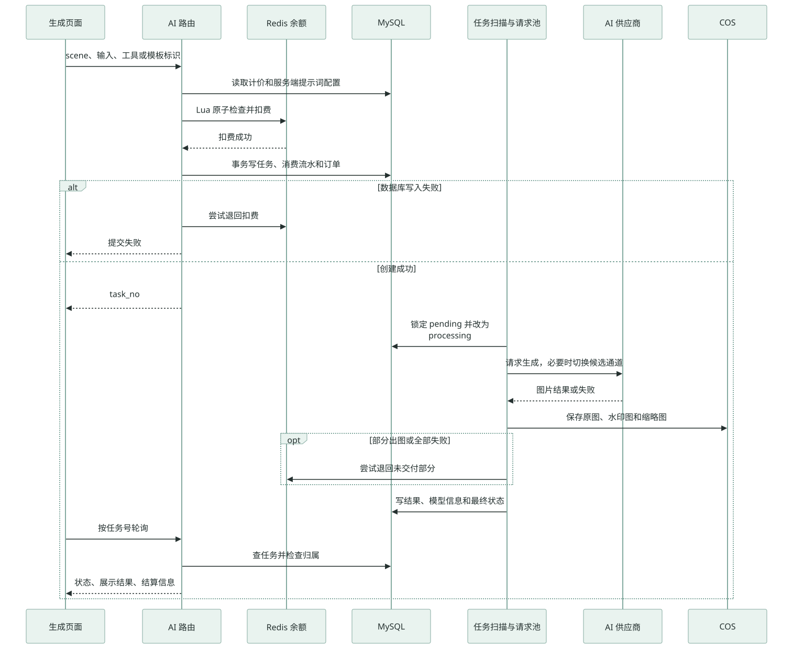

这里的持久任务队列是 MySQL 的 ai_tasks，Redis 用于余额等其他状态，进程内 channel 用于执行排队；没有发现 RabbitMQ、Kafka 或 Redis Stream 队列。图中的 COS 保存步骤适用于存在成功结果的情况，全部失败不产生图像资产。
5.2 工具配置化是最有价值的扩展点
ai_tools 描述名称、分类、封面、说明、默认提示词、参考预设、风格预设、排序、是否常用和发布状态。管理端修改配置后，小程序工具列表、详情和通用工作台读取同一份配置。
风格预设明确区分：preview_only 只给用户展示；preview_and_model 还将指定图送给模型。服务端按预设 ID 取真实配置，拼接“工具默认提示词 + 参考预设后缀 + 风格后缀 + 用户补充”。这比每个工具独立开发一套生成引擎更易扩展。
公共工具响应不包含顶层 default_prompt，但预设结构仍有 prompt_suffix 字段，因此不能声称工具全部提示词都不会暴露。模板内部提示词另有保护路径。

5.3 专用业务场景如何落到同一引擎
| 模块/入口 | 输入与规则 | 服务端实现 |
|---|---|---|
乡村别墅 ruralvilladesign | 地块尺寸/示意图、建筑风格、地块描述、参考图 | /ai/rural-villa-design，buildRuralVillaPrompt，写 rural_villa_design 任务 |
全能设计 allrounddesign | 风格变换、海报、文创；原图与参考图分别组织 | /ai/allround-design，按 design_type 构建提示词，进入图片队列 |
建筑换新 buildingreplacement | 外立面/室内图、改造方向、材质及补充要求 | /ai/building-replacement，专门的提示词组装 |
亲子创意 Parentchildcreativity | 玩偶、海报、文创类型，原型、风格和参考图 | /ai/parent-child-design，生成张数计价后进入图片队列 |
新闽派 newminnantool | 文生图或图生图、地域风格规则 | new_minnan_tool_text_to_image/image_to_image，服务端补风格词，走 RunningHub 专用异步协议 |
| 模板做同款 | 模板 ID、原任务载荷或内部提示词、展示参考图 | /templates/:id/generate，校验付费模板解锁后创建图片任务 |
这些场景共享的是任务执行设施，而不是完全一致的提交事务。专用设计路由仍有各自扣费、写流水和建任务代码，不能把通用 /ai/draw 的事务保证直接套在所有设计入口上。
5.4 迁移时应补上的能力
图片任务虽然能避免两个 Worker 同时领取 pending，但未看到 processing 任务的租约、超时回收和启动恢复。进程在领取后退出，任务可能持续停在 processing。供应商请求超时也不必然代表对方没有执行，降级可能产生额外外部成本。
建议复用“场景配置 → 任务记录 → 有界执行池 → 供应商适配 → 自有资产归档”的结构，补上任务租约、独立结算幂等键、重试次数、外部任务状态持久化和全局供应商限流。
依据：service/route/ai.go:567；service/model/ai_task.go:350；service/component/ai_task_processor.go:100；service/component/ai_task_processor.go:815；service/component/requests.go:86；service/component/requests.go:1117；service/route/ai.go:241；service/route/ai_tool.go:28。
6. AI 视频：独立状态机与供应商任务监控
视频不直接走图片请求池。ai_video.go 定义供应商适配接口，包含老张视频接口和方舟 Seedance 实现；具体选择来自配置。页面可提交文本、单图或首尾帧等输入，服务端扣费并向供应商创建任务，得到外部 ID 后保存 ai_video_tasks。
单段视频由后台监控协程和前端轮询共同触发同步。状态统一映射成 queued、processing、completed、failed；如果供应商已 completed 但自有结果 URL 还未就绪，对用户继续表示处理中。成功后下载、处理水印并上传 COS，避免把供应商临时 URL 直接当成最终交付。

还有多段连续视频路径：依次生成片段、利用供应商返回的上一段尾帧衔接继续生成，再用 FFmpeg 拼接。这一流程的片段执行状态主要在协程和内存变量中，不能等同于完整的断点续跑工作流。启动恢复会扫描最多 200 条活跃视频记录，但“恢复监控”不代表“恢复多段生成的中间执行现场”。视频水印失败时当前路径会继续归档原片，因此水印不是强制交付前置条件。
单段失败处理用数据库条件状态更新控制退款触发资格，比纯内存标记更有价值；但退款额度按当前计价配置重新计算，而非读取任务创建时冻结的费用，迁移时应改为收费快照。sync.Map 中的任务锁仅约束本进程，并非跨实例分布式锁。
可复用：外部状态归一化、自有 URL 才算交付成功、长时间等待转售后。需要补强：分段步骤持久化、跨进程协调、费用快照、媒体处理失败策略。
依据：service/route/ai_video.go:100；service/route/ai_video.go:940；service/route/ai_video.go:978；service/route/ai_video.go:676；service/route/ai_video.go:1604；service/model/ai_video_status.go:36；service/component/video_watermark.go:87。
7. 聊天、智能客服与建筑规范问答
7.1 普通 AI 聊天
/ai/chat/stream 接收 messages 与可选 system_prompt，按场景配置扣费，调用主模型或备用通道，通过 SSE 返回 content、done、error 等事件。聊天页增量更新消息，也可以从聊天整理提示词再发起图片任务。
它主要是应用后端代理模型对话；没有证据表明所有聊天都统一进入持久化会话中心。建筑规范问答另有明确的会话和消息表。
7.2 客服是“规则分流 + AI 表达 + 线索经营”
/ai/intent/stream 的代码优先级是：知识库规则命中 → 高意向关键词转人工 → 中意向建筑/案例引导 → AI 意图分类兜底。结果包含 intent_type、intent_level、guide_action，前端据此展示生成、模板、造价、人工或需求收集入口。它不是每次都让模型自由决定所有动作。

session_no 关联一次咨询，source_task_no 关联生成结果，lead_id 关联线索，事件表记录入口曝光/点击/提交等过程，跟进表保留运营动作。客服模块因此可以用于追踪“用户从哪张生成图进入咨询、留下什么需求、最后是否转化”。漏斗是事件统计，不应直接等同于经过严格归因验证的成交率。
7.3 建筑规范问答
文档上传经格式/大小检查后上传 COS，建立 building_code_documents，并异步导入 FastGPT。当前上传默认写入 public、approved 并立即索引；虽然管理接口提供审核、禁用和重新索引，但人工审核并非当前上传流程的强制前置门槛。提问时检查会话归属，保存用户消息，把问题发给 FastGPT，流式返回正文与引用，再保存回答和引用信息。
FastGPT 完全无输出且失败时，代码会降级到通用模型，并向前端明确发送“未检索到规范原文”的 notice。不能把降级结果当作有规范引文支撑的 RAG 回答。
检索、切分、向量索引等能力属于外部 FastGPT；仓库没有自建向量数据库实现。管理端有相应后端接口，但注册的 25 个管理页面里没有独立的建筑规范管理页面，不能仅凭 API 就判定可视化运营闭环已完成。
可复用：规则优先的意图路由、结构化 action 输出、业务来源关联、正文和引用分别保存、降级能力显式标记。
依据：service/route/ai_chat_stream.go:60；service/route/ai_intent_stream.go:46；service/route/customer_service.go:44；service/model/customer_service.go:25；service/route/building_code.go:200；service/route/building_code.go:361。
8. 模板、灵感、收藏与设计师：内容生产到消费
8.1 模板广场和做同款
模板记录不仅是图片，还包括分类/Tab、缩略图、多图、价格、状态、发布范围、作者、内部提示词及可选原始任务 ID。管理端配置分类、Tab、精选案例组，审核和发布内容；小程序展示公开的 square 范围内容，设计师主页可以使用独立发布范围。
“做同款”优先从原始 AI 任务恢复请求载荷；没有可用原任务时，使用模板内部提示词与展示参考图组装新任务。付费模板先检查解锁，再按生成费用提交任务；原任务是否可用由查询结果判断，不只检查非零 ID。
模板公开响应不直接返回 InternalPrompt。后端组装输入时设置隐藏标记，避免把内部提示词作为普通展示数据返还。迁移时仍需核对历史详情接口、任务载荷回包和存量 description 的数据清理，而不是只隐藏前端文本。
8.2 三种资产下载权限不同
| 资产 | 当前主要权限条件 | 技术路径 |
|---|---|---|
| 模板图片 | 登录 + 手机号资料 + 有效下载会员，兼容历史成功充值资格 | 后端生成下载入口，按套餐校验有效期、总量、每日量、频率，文件代理下载 |
| 用户自己的 AI 图片原图 | 任务属于当前用户、已成功、已有手机号授权相关验证标记 | 查询结果中的 raw_images/url_raw，或经后端文件代理 |
| 完整建房报告 | 所属用户、已支付、真实企微联系人绑定、报告 ready | 私有 COS 的限时签名下载 |
模板“解锁”与模板“图片下载会员”是两套判断：前者主要约束付费模板使用，后者约束下载资格。AI 原图中的 EnterpriseWechatVerified 历史命名在当前路径也能由手机号授权验证设置；它不能替代报告模块对真实企微联系人身份的验证。

模板解锁现在分步执行扣费、记订单、建解锁记录、给作者加灵石，不在统一事务里，且部分错误被忽略。并发解锁与中途失败可能造成重复扣费、收款与授权不一致，这一段不能原样作为数字商品交易模块复用。
8.3 通用收藏和灵感素材
user_favorites 使用 user_id + target_type + target_id 唯一键，统一收藏模板、AI 工具、设计师和灵感。INSERT IGNORE 让重复添加自然幂等；响应层把不同对象适配成同一收藏卡片。模板收藏同时兼容历史点赞数据，属于迁移兼容设计，不能假设收藏和点赞已经完全分离。
inspiration_assets 负责灵感素材，独立管理和审核；utility_tools 负责实用工具内容，属于内容型工具，不应与会发起 AI 任务的 ai_tools 混为一谈。
8.4 设计师与认证
认证流程是：个人/企业信息校验 → 阿里云基础核验 → 创建待支付申请 → 支付成功推进待审核 → 管理员通过或拒绝 → 同步认证衍生权限和主页展示状态。可继续支付未完成申请，审核前后还会检查账号与认证资料一致性。
设计师主页聚合作品、介绍、认证、订单、收入、评价和关注，公开状态与是否接单可在管理端调整。模板消费订单可关联设计师及模板，为评价和收益统计提供业务依据。
can_withdraw 是认证衍生资格，不代表提现通道当前可用；当虚拟支付启用时，提现接口主动返回维护状态。语音通话页面和消息中心目前仅有少量界面交互/空数据，不构成完整的实时通信与通知服务。
依据：service/route/template.go:119；service/route/template.go:404；service/route/template.go:1212；service/component/download_limiter.go:31；service/model/user_favorite.go:47；service/route/favorite.go:173；service/route/certification.go:25；service/route/certification_management.go:14；service/route/wechatpay.go:60。
9. 灵石、会员、支付与邀请
9.1 账务对象的分工
| 对象 | 作用 | 需要注意 |
|---|---|---|
users.stones + Redis user:stones:* | 用户灵石余额 | 常规增减先改 Redis，再用协程写 MySQL；当前不是数据库强一致总账 |
stone_records | 签到、消费、退款、充值、邀请等流水 | 不同模块写法不完全统一，不能只凭余额变动推定流水完整 |
user_orders | 充值、消费、模板文创、认证、提现、报告等业务订单 | amount 随订单类型有灵石/历史金额语义，现金支付应看 amount_fen 等明确字段 |
membership_plans | 充值档位、时长、下载权益和限制 | 运营配置，服务端用于匹配权益 |
user_memberships | 每用户当前会员、到期时间和来源订单 | 唯一 user_id，当前权益表，不是完整的每次权益发放账本 |
xpay_message_logs | 虚拟支付回调日志和异常追踪 | 日志辅助排查，发货防重最终依赖订单状态处理 |
Redis Lua 能保证单次余额检查与扣减不被并发打断，但不能让 Redis、订单、流水、任务和第三方支付成为一个原子事务。后台多个请求并发异步回写余额，或进程退出后重新从 MySQL 覆盖 Redis，都存在需要收敛的账务一致性边界。
9.2 虚拟支付三路汇合
前端 requestVirtualPay 封装平台能力检查、重新 wx.login、/virtualpay/prepare、wx.requestVirtualPayment 和 /virtualpay/confirm。prepare 保存订单并返回签名字符串，前端原样透传给微信。
支付结果由三路推进：客户端 confirm、微信消息回调、每 60 秒的服务端补偿。它们复用服务端查询/发货逻辑，不应依据客户端弹窗成功直接充值。

pending → delivering → success 的条件更新能阻止并发重复发货，但不等于整个交付具备端到端 exactly-once。尤其充值已加余额、会员发放失败、订单成功状态写失败等情况，仍缺少统一的权益发放流水和幂等业务键。
当前补偿先把超过 30 分钟的 pending/delivering 直接改 failed，再扫描超过 2 分钟的订单。扫描虽然包括 delivering，但推进函数对 delivering 直接返回 PAYING，没有租约回收；因此崩溃遗留的 delivering 可能等待到被标失败，不能描述成已经可靠修复中间态。对于支付状态不确定的订单，迁移时应先查单/对账，再决定终态。
9.3 会员、签到与邀请
充值成功按金额匹配会员档位，延长或授予下载权益；未匹配档位时还有长期下载会员兼容逻辑。有效性和下载限制在后端判断。扩展时建议用独立的权益发放记录保存订单幂等键和历史快照。
签到由每日唯一记录约束，再按连续天数发灵石，当前奖励为第 1/2/3/4/5/6/7 天及以后 5/10/20/25/30/35/40。签到记录、余额和流水仍是分步处理。
邀请采用后端生成的六位唯一邀请码。小程序保存待绑定的邀请码，登录或主动核销时校验邀请人、自邀请和既有关系，绑定成功双方各得 50 灵石。分销后台聚合邀请关系与奖励流水。
虽然存在 invite_rewards 模型和“首充 10%、AI 每次奖励”的历史注释，本次未在主启动/实际充值及 AI 执行链中找到完整接入。应把“邀请绑定和注册奖励”视为已确认逻辑，不应据此宣称持续返佣系统已经落地。
依据：service/model/user_redis.go:90；service/model/user_redis.go:174；miniprogram/miniprogram/utils/virtualpay.ts:42；service/route/virtualpay_apply.go:54；service/route/virtualpay_compensate.go:94；service/model/user_order.go:366；service/model/user_membership.go:27；service/model/invite_reward.go:10。
10. 造价与建房报告：两个不同产品链路
10.1 基础造价和 Excel 测算
/ai/cost/calculate 当前是固定规则：按面宽、进深、层数扣除庭院/露台得到面积，再按结构与屋顶系数计算主体、基础、屋面、门窗、外墙、水电等费用。城市虽是输入项，但不是实时地区价格服务。它不调用大模型，也不是已经接入专业计价数据库的造价引擎。
/ai/cost/doc 则创建 ai_cost_doc 任务，单独启动协程，调用方舟 Responses 接口取得结构化章节/Markdown 表格，再由 Go Excelize 写成多个工作表并上传 COS。它故意不让普通图片任务扫描领取。
值得复用的是“内容生成 → 结构解析 → 确定性文件输出”的分层，而不是固定单价及字符串表格解析本身。文档任务如启用收费，当前任务 StonesUsed 仍设置为 0，是统计和退款审计需要修正的地方；这一路也没有报告 Worker 的租约恢复能力。
10.2 建房报告的领域模型更完整
报告分包包含 landing、questionnaire、preview、delivery。五步问卷收集地块、家庭、空间、风格/优先级和预算；服务端对数值、枚举、文本长度做边界检查，将规范化输入序列化并算 SHA-256。
报告按“用户 + input_hash + protocol_version”去重。首次创建预览任务；Worker 根据规则生成事实和正文，可让 LLM 辅助有限文本，失败时退回规则文本。生成的预览被冻结为快照。完整版基于已冻结的预览和经审核的方案包版本扩充，再交给固定 A4 渲染器。

图中的 downloadable 是权限判断结果，不是数据库 status 的新枚举。企微绑定可以独立发生；下载时同时检查 paid、bound、ready，而不是必须按图中最后一步的时间顺序操作。
10.3 为什么报告模块适合提炼成模板
| 机制 | 当前实现价值 | 可迁移场景 |
|---|---|---|
| 规范化输入 + hash + 协议版本 | 避免相同输入重复创建，支持规则演进 | 测评报告、报价单、申请材料、合同草稿 |
| 不可变预览快照 | 付费前后内容可追溯，避免每次随机重生成 | 付费报告、设计方案包、分析结果 |
| 方案包 ID 与版本冻结 | 支付时绑定明确产品与交付内容 | 数字商品、套餐、资料包 |
lease_token + lease_until + attempt_count | 可回收超时任务，旧 Worker 不能覆盖新 Worker 的结果 | 导出、大模型任务、文件转换 |
| Store/Renderer/PrivateStorage/Catalog 接口 | 业务逻辑不绑定具体 SDK 和数据库 | 模块独立测试与替换基础设施 |
| 规则生成 + 有限 AI 辅助 | 事实和版面确定，AI 输出失败仍有结果 | 对格式和可解释性要求高的文档 |
| 私有文件 + 短时签名 | 把购买和下载权限收口到后端 | 付费附件与敏感文档 |
| 支付、绑定和生成状态独立 | 业务事实不塞进一个 status 字段 | 多条件交付流程 |
报告企微交付使用专用票据和回调：验证 external_user_id、unionid 与订单所属用户相符，并确认跟进员工。欢迎语用条件领取防止重复发送，对超时不确定情况标记 manual_required。普通手机号验证不满足这套真实企微绑定条件。
模块开启有准备检查：数据库结构、渲染程序、字体/资产、私有存储、方案包、支付与企微配置不足时，服务不可用或关闭购买入口。因此源码完整不代表当前环境已能售卖报告。
依据：service/route/ai_cost.go:51；service/route/ai_cost_doc.go:155；service/report/content.go:105；service/report/content.go:118；service/report/mysql_store.go:192；service/report/service.go:159；service/route/report.go:42；service/reportwecom/service.go:91。
11. 管理端：业务操作台，而非第二套后端
11.1 前端结构
入口为 React SPA，BrowserRouter basename="/admin" 与 Vite base: /admin/ 配套。路由使用 lazy + Suspense 分块，构建显式拆分 React/Router 等依赖。开发环境 /api 通过 Vite 代理到配置的服务地址。
Layout 组织侧栏、顶部栏和页面；BookmarkProvider 通过 Context 管理打开的路由标签及刷新标记。标签存在不等于页面组件被 keep-alive 缓存。数据请求通过 src/api/*.ts → utils/request.ts → Fetch；携带 Cookie，处理业务 code，再由页面 useState/useEffect 驱动列表、筛选和弹窗。

11.2 管理模块与后端职责映射
| 页面组 | 页面/入口 | 实现逻辑及主要数据 |
|---|---|---|
| 总控台 | dashboard | overview/trends/todos 三类聚合接口；统计新增用户、订单、任务、待认证和异常 |
| 用户运营 | users、user-workbench | 用户列表、余额调整、资料修正；360 接口一次聚合会员、订单、任务、流水及设备风险 |
| 设计师与认证 | designer-center、certification | 认证审核、公开主页、接单开关，设计师作品与评价摘要 |
| 内容配置 | templates、inspirations | 模板上下架、分类和 Tab、精选组、原始任务、隐藏提示词；灵感素材审核 |
| AI 配置 | ai-tools、ai-config | 工具/风格/参考图配置、计费场景与供应商请求配置 |
| AI 排障 | ai-tasks | 图片/视频任务列表、详情、真实执行模型、错误和工单关联 |
| 交易与会员 | recharge、virtualpay、recharge-config、membership-plans、membership-operations | 订单中心、虚拟支付日志/健康、充值与权益配置、到期用户筛选 |
| 客户经营 | customer-leads、distribution | 线索分配、跟进、状态、漏斗；邀请关系排行和奖励排查 |
| 分析 | content-analytics、report-center | 内容排行、转化观察、报表预览及 CSV 导出 |
| 风险与售后 | risk-control、support-tickets | 设备分组/异常支付/失败任务查询；创建工单、分配、解决说明和关闭 |
| 基础管理 | oss、logs、utility-tools | 文件列表上传删除、日志配置/查询、内容型实用工具 |
售后工单以 source_type + source_id 关联订单/任务等来源，状态为 open、in_progress、closed。自动或手动汇集异常后交给运营处理。当前按“是否已有未关闭工单”查询去重，不应等同于已实现数据库唯一约束的绝对防重。
运营报表直接查询业务库，并非独立数仓。数据量上升后，聚合查询会和交易/任务竞争数据库资源。尤其“download_count”部分代码同时在使用/生成路径增加，不能无条件解释为实际文件下载次数；应与 template_download_records 分开定义统计口径。
配置文件还留有 /api/v1/admin/products、gifts、warehouse 等地址，但没有对应的已注册管理页面和本服务路由支撑，视为遗留/预留接口，不应计入已经完成的电商仓储模块。
一个明确的前端问题是：全局 401 处理跳 window.location.href = '/login'，而管理端部署基路径是 /admin，需要改为与基路径一致的导航策略。
依据：background/src/App.tsx:9；background/vite.config.ts:10；background/src/component/ProtectedRoute.tsx:14；background/src/component/bookmark.tsx:36；background/src/utils/request.ts:70；service/route/user_workbench_management.go:67；service/route/report_center_management.go:409；service/model/support_ticket.go:139。
12. 核心数据关系与边界
下面是核心逻辑关系，不是数据库外键约束声明。JSON 载荷与通过订单号关联的对象在实际模型中也较常见。

关系图中省略了评论、点赞、分享、关注、精选组、规范文档、配置及日志等边表，完整声明清单在 code-index.md。没有把支持工单来源、收藏多态 ID 等字段画成真实外键。
关键设计判断：
- 业务身份以 user_id 为中心，但展示身份、登录凭证、认证状态、手机号授权和企微交付绑定是不同概念，不能只用一个布尔字段代替。
- 订单、资金流水和任务不是同一个状态机：任务失败退款后，原消费订单仍可能保留历史消费语义。结算口径必须说明总消费、实际消耗和退款分别从哪里取。
- 任务载荷承担执行快照：request_payload/result_payload 方便追溯，但也造成跨层依赖和动态字段泛滥，新增模块应定义版本化结构。
- 资产文件与业务记录分离：COS 存文件，MySQL 存 URL/对象键和业务归属；公开图片与私有报告应使用不同的访问策略。
13. 复用到其他项目：提炼设计，再提炼代码
13.1 复用优先级
| 优先级 | 可提炼能力 | 适用项目 | 复用前处理 |
|---|---|---|---|
| 高 | 报告 Service/Worker/Store/Renderer/Storage 分层 | 测评、报告、报价、资料生成 | 去掉建筑事实与方案包规则，保留租约、快照、权限与接口 |
| 高 | 配置驱动的 AI 工具工作台 | 电商作图、营销素材、装修、教育创作 | 通用 ToolSchema、输入约束、PromptVersion、模板版本；补全端到端配置校验 |
| 高 | 统一生成资产与执行元数据 | 所有付费 AI 产品 | 确定原图/缩略图权限、资产过期、供应商成本和模型记录 |
| 高 | 线索 + 事件 + 跟进记录 | 企业服务、咨询、装修、培训 | 替换需求字段、定义事件版本、增加分配权限与去重策略 |
| 高 | 多类型收藏 | 内容社区、工具库、资源平台 | 移除模板点赞兼容，统一 TargetResolver，批量加载目标避免逐条查询 |
| 中 | 支付三路确认与统一发货入口 | 数字商品、会员和充值 | 必须补发货流水幂等、租约恢复、完整查单/对账与退款闭环 |
| 中 | 数据库任务表 + 有界 Worker 池 | 中小规模长任务 | 从报告模块引入租约，统一各类任务重试、关机与结算 |
| 中 | 管理端路由配置和用户360 | SaaS 运营后台 | 先补服务端 RBAC、基路径导航、统一分页/错误类型 |
| 低 | 当前余额实现、自定义签名、默认管理员逻辑 | 不建议直接作为新项目基础 | 重新设计账本与鉴权，移除固定默认凭据及生产调试暴露 |
| 低 | 固定造价规则、页面空壳、历史返佣注释 | 仅作产品需求参考 | 先定义真实数据来源与验收条件 |
13.2 建议的新项目结构
无需首先拆微服务。可以先保持单体部署，把“HTTP 参数转换”和“业务执行”拆开，并让同步接口与异步 Worker 复用同一个应用服务。

这是建议架构，尚未在当前项目实施。可按以下模块边界逐步提炼：
internal/
identity/ 登录身份、凭证、角色与资源归属
generation/ 图片、视频、文档的任务和状态机
billing/ 价格快照、事务账本、退款与权益发放
payment/ 渠道查单、回调和对账
content/ 模板、工具、收藏及发布权限
reporting/ 输入协议、内容快照、方案包、渲染与交付
crm/ 线索、事件、跟进
operations/ 面向管理端的聚合读取
infrastructure/ MySQL、Redis、COS、外部 API、FFmpeg13.3 如何增加一个新 AI 工具
以“电商商品图生成”为例，可借鉴本项目工具体系：
- 定义商品图工具输入：商品图、背景风格、文案、比例、张数；明确哪些参考图只展示、哪些送模型。
- 在服务端保存 ToolSchema、提示词版本和预设，不让客户端直接决定收费或内部模板。
- 管理端维护展示素材、发布状态和价格，小程序复用列表/详情/工作台。
- 创建任务时冻结价格、提示词版本、模型策略与输入资产。
- Worker 调供应商，归档原图、展示图、缩略图并记录执行元数据。
- 用结算幂等键处理成功/部分成功/失败；让历史页、收藏、客服来源和后台任务排查复用同一任务 ID。
如果只是已有输入类型和规则的组合，配置即可覆盖大部分展示；如果新增模型协议、输入类型、审核或计价方式，就需要补接口与领域逻辑，不能承诺“完全零代码新增工具”。
14. 当前项目应优先补强的地方
以下为代码可见的问题和设计边界，不表示线上已经发生故障，也不包含生产利用测试。
| 优先级 | 发现与依据 | 影响 | 建议措施 |
|---|---|---|---|
| P0 | 管理端 AuthRequired 只查 user_id；小程序也建立相同 Session | 管理接口没有完整的服务端角色边界 | 独立管理员校验，所有 management 路由统一校验角色；随后补 RBAC |
| P0 | Redis 余额先增减、异步回写 MySQL，业务表不全在同一事务 | 崩溃、重启、并发回写和补偿时可能出现资金事实不一致 | 以事务账本为准，余额、流水、权益/订单采用明确事务或 Outbox 协调 |
| P0 | 支付补偿把陈旧 pending/delivering 直接置 failed；delivering 无实际回收推进 | 已支付未交付或半交付订单可能无法正确收敛 | 查单后决策、发货租约、逐项权益幂等、人工对账入口 |
| P0 | 默认管理员初始化含固定初始密码；密码哈希使用固定盐 MD5；工作区有支付私钥/证书文件 | 这类启动和凭据管理代码不适合作为复用模板 | 去除默认通用密码；采用专用密码哈希；核实敏感文件管理，按实际暴露情况处理凭据 |
| P1 | 图片 processing 无租约；造价/连续视频协程缺完整步骤恢复 | 进程重启可能留下卡住任务或丢失中间执行状态 | 借鉴报告 Worker 的租约、次数和带 token 的条件完成 |
| P1 | 模板解锁、签到/邀请奖励等分步处理，部分错误忽略 | 已扣费未授权、已记奖励未到账等 | 统一账务服务、业务唯一键与可重试发放记录 |
| P1 | 视频退款读取当前价格；造价文档扣费但任务记 0 | 价格变更后退款不准、成本统计不可靠 | 创建时冻结收费及价格版本，退款引用原记录 |
| P1 | 多处返回或保存原始资产 URL；严格私有交付主要在报告模块 | 不能从“前端按钮受限”推导文件本身受限 | 审核 COS ACL 与 URL 发放；付费资产使用私有对象和后端授权 |
| P1 | 小程序请求封装分散；管理端 401 跳转丢失 /admin 基路径 | 环境切换、登录失效、签名与错误处理不一致 | 提炼请求适配器，明确鉴权模式，集中处理导航 |
| P2 | 主要路由/组件超长，业务与 SQL 混杂 | 更改一个规则需追多个文件，难独立验证 | 按领域抽应用服务与仓储，优先从任务创建/结算开始 |
| P2 | 启动阶段大量建表/ALTER；缺可确认的部署和完整 CI 配置 | 升级过程与启动可用性耦合 | 显式版本迁移、分环境配置、发布检查与回滚说明 |
| P2 | 运营聚合直接查询业务库、统计字段复用 | 数据增长后数据库争用、运营口径含糊 | 统一指标字典，再按实际容量增加汇总表/只读查询能力 |
大型文件的代表包括：route/miniprogram.go 4071 行、component/requests.go 3302 行、生成详情页 2274 行、route/ai_video.go 1842 行。这些不是单独的质量判定，但与本次看到的跨层职责混合一致。
改造顺序建议为：权限与账务边界 → 支付/任务恢复与幂等 → 统一请求和领域模块 → 运营指标与部署工程化。不应先拆成多个服务再处理一致性问题，否则会扩大跨进程协调成本。
依据补充：service/function/password.go:9；service/main.go:21；service/route/virtualpay.go:215；service/route/ai_cost_doc.go:113；service/model/user_redis.go:34。
15. 如何使用本次交付
analysis.md 是带可点击代码定位的分析正文；analysis.source.md 保留可自动更新代码行号的编辑源；report.html 提供完整阅读版；diagrams/ 同时保留 Mermaid 源图和可直接使用的 SVG；code-index.md 与 inventory.json 提供页面、接口和数据表声明索引。
本次确认的是源码结构与关键实现链，不是线上验收报告。未启动后端、未调用收费接口、未测试真实支付、未运行数据库迁移；因此生产开关、表是否已迁移、模型额度、实际文件 ACL、部署可用性和吞吐上限仍需在独立验收中确认。当前环境的 Go 命令也未在 PATH 中找到。
这套系统最值得带到其他项目的是：配置驱动的工具入口、异步生成与资产归档、支付多路确认、内容消费与设计师关联、客服来源追踪，以及报告模块的租约/快照/私有交付。其中报告模块的职责分离和任务恢复设计，可以先反向应用到现有图片、视频和计费链路。